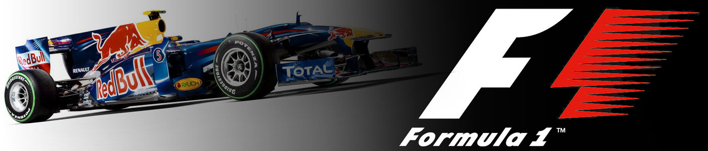
Teams
*These are the teams competing in the 2019 season and may change in the future*

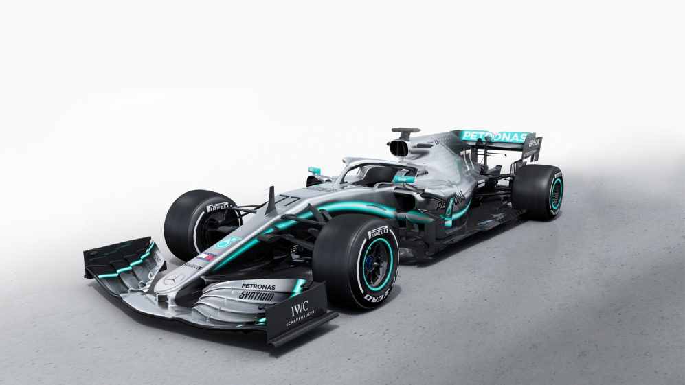
Mercedes-AMG Petronas Motorsport F1 Team is the most successful team in the hybrid formula 1 car era with winning the last five World Constructors Championship and are in a fantastic possition to
add a 6th. They're also known by their nickname "The Silver Arrows".
Scuderia Ferrari is the oldest surviving and most successful Formula One team, having competed in every world championship since the 1950 Formula One season. The team was founded by Enzo Ferrari,
initially to race cars produced by Alfa Romeo, though by 1947 Ferrari had begun building its own cars.
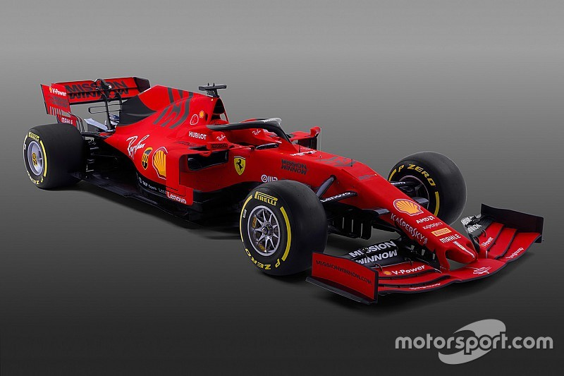
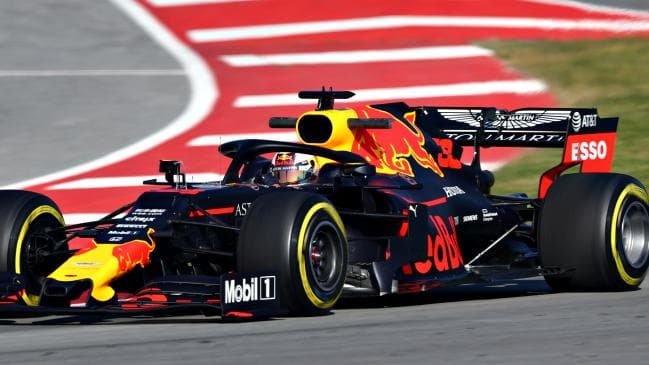
The current Aston Martin Red Bull Racing Formula 1 team can trace its origins back to the Stewart Grand Prix outfit that made its debut in 1997. Jackie Stewart sold his team to the Ford Motor Company
late in 1999, and Ford made the decision to rebrand the team Jaguar Racing, with little subsequent success over the next five years. However, recently they have found success with drivers such as Sebastian Vettel and Max Verstappen.
Haas F1 Team debuted in the FIA Formula One World Championship in 2016, becoming the first American-led Formula One team since 1986. Founded by industrialist Gene Haas, Haas F1 Team is based in the United States on the same Kannapolis, North Carolina,
campus as his championship-winning NASCAR team, Stewart-Haas Racing.
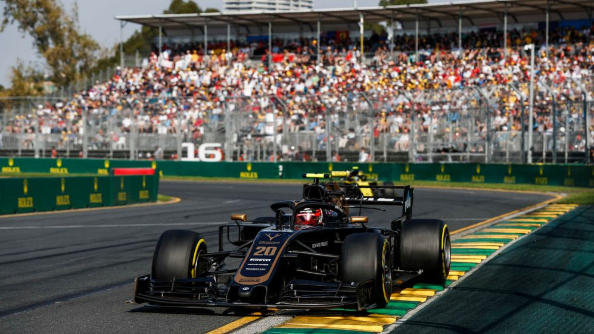
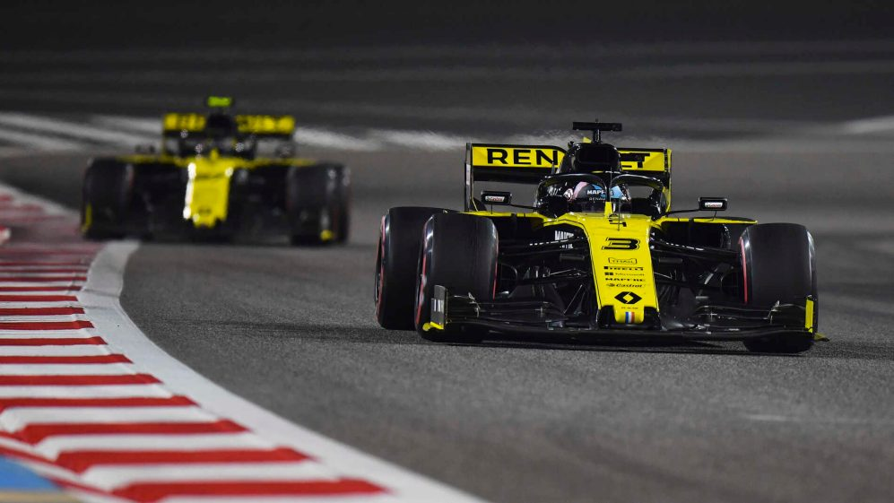
Renault F1 Team. The history of the team acquired by Renault started in 1981 as the Toleman Motorsport team, based in Witney, Oxfordshire, England. In 1986 the team was renamed to Benetton
Formula, following its purchase in 1985 by the Benetton family. In 1992/3 the team moved a few miles to a new base in Enstone.
Racing Point F1 Team was the team that Racing Point UK made a late entry into the 2018 Formula One World Championship with. The team used the constructor name "Force India", competed under a British
licence and was based in Silverstone, United Kingdom. The team was formed in August 2018 when investors purchased the assets of Sahara Force India F1 team, which was operating under administration. The consortium of investors included
André Desmarais, Jonathan Dudman, John D. Idol, John McCaw Jr., Michael de Picciotto and Silas Chou named Racing Point UK Ltd. and were led by Lawrence Stroll, the father of then-Williams F1 driver Lance Stroll. The team made its
competitive debut at the 2018 Belgian Grand Prix. The team was renamed in February 2019 as Racing Point F1 Team
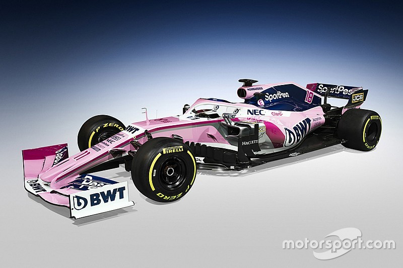
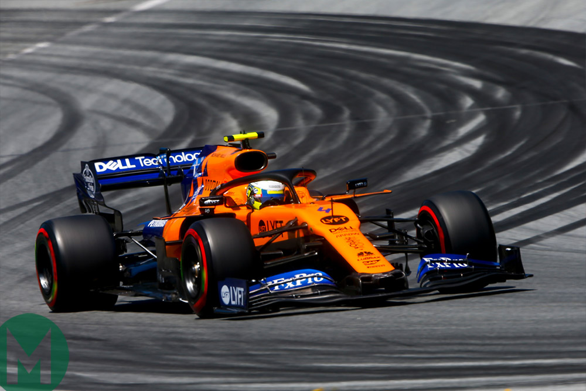
Mclaren. Originally known as Bruce McLaren Motor Racing, McLaren was founded by New Zealand F1 driver Bruce McLaren in 1963, making their grand prix debut at the 1966 Monaco Grand Prix. They were
the first team to construct a car around a carbon fibre monacoque, a process now commonplace in most forms of motorsport.
Scuderia Toro Rosso. The team was established after Paul Stoddart sold his remaining interest in the Minardi team at the end of 2005 to Red Bull's owner, Dietrich Mateschitz and Minardi was renamed
Toro Rosso. ... Vitantonio Liuzzi scored the team's first point in its first season at the 2006 United States Grand Prix.
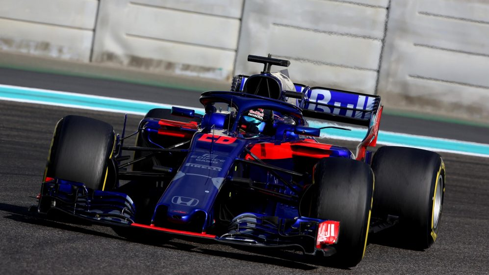
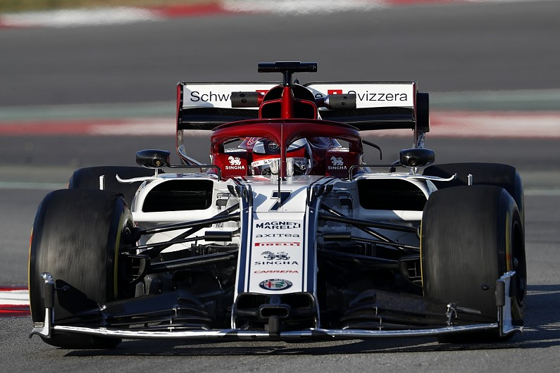
Alfa Romeo Racing. Autodelta, Marlboro and Benetton Team Alfa Romeo (1979–1985). During 1977, and after some persuasion by Chiti, Alfa Romeo gave Autodelta permission to start developing a Formula
One car on their behalf. Thus named the Alfa Romeo 177, the car made its debut at the 1979 Belgian Grand Prix. They then made their return in 2018 as partners with Sauber until making their full return in 2019.
Williams Martini Racing. The team was formed in 1977 after Frank Williams's two earlier unsuccessful F1 operations: Frank Williams Racing Cars (1969 to 1975) and Wolf–Williams Racing (1976).
Williams started manufacturing its own cars the following year, and Switzerland's Clay Regazzoni won Williams's first race at the 1979 British Grand Prix.
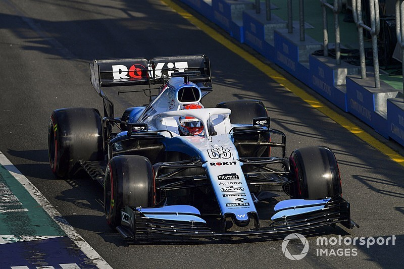